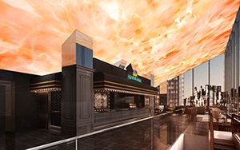
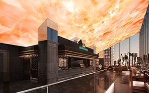

|
シネマサンシャインメールマガジン 2019/7/12号 |
 |
毎月15日はシネマサンシャインデー
どなたさまでも1,200円でご鑑賞いただけます。 次回は来週7/15（月）です！ ※3D、4DX、IMAX、ATMOS、dts-x、ScreenXは別途追加料金が必要となります。 |
オススメ作品
『トイ・ストーリー4』
7/12（金）公開
©2019 Disney/Pixar. All Rights Reserved.
ディズニー／ピクサーの原点にして最高傑作！シリーズ史上最大の感動のアドベンチャー！！ウッディ、バズらおもちゃの仲間たちの前に現れた、自分をゴミだと思い込んでいる手作りおもちゃのフォーキー。 新たな冒険の先でウッディを待ち受けていたのは、運命的な出会いと想像を超える世界だった。 はたして彼が最後に選んだ“驚くべき決断”とは…？
監督：ジョシュ・クーリー
声の出演：日本版声優：唐沢寿明、所ジョージ、戸田恵子
声の出演：日本版声優：唐沢寿明、所ジョージ、戸田恵子
『天気の子』
7/19（金）公開

©2019「天気の子」製作委員会
「君の名は。 」が歴史的な大ヒットを記録した新海誠監督が、天候の調和が狂っていく時代に、運命に翻弄されながらも自らの生き方を選択しようとする少年少女の姿を描いた長編アニメーション。
「君の名は。 」に続いて川村元気が企画・プロデュース、田中将賀がキャラクターデザイン、ロックバンド「RADWIMPS」が音楽を担当。
「君の名は。 」に続いて川村元気が企画・プロデュース、田中将賀がキャラクターデザイン、ロックバンド「RADWIMPS」が音楽を担当。
監督：新海誠
声の出演：醍醐虎汰朗、森七菜、小栗旬、本田翼、平泉成、梶裕貴、倍賞千恵子
声の出演：醍醐虎汰朗、森七菜、小栗旬、本田翼、平泉成、梶裕貴、倍賞千恵子
公式サイト：https://tenkinoko.com/
上映作品
7/12（金）公開
『ミュウツーの逆襲 EVOLUTION』

ニュース
○この夏、IMAXで没入するか？4DXで体感するか。 豪華賞品が当たる！シネマサンシャイン サマーキャンペーン実施中
6/28～9/5の期間中、この夏話題の対象作品4作品(IMAXまたは4DX)のQRコード画面のスクリーンショット画像もしくはチケット半券を撮影した画像計2枚を1口としてご応募ください。
実施劇場：平和島、土浦、沼津、大和郡山、衣山、北島、MASAKI、姶良
詳細はキャンペーンサイトをご確認ください。

実施劇場：平和島、土浦、沼津、大和郡山、衣山、北島、MASAKI、姶良
詳細はキャンペーンサイトをご確認ください。
詳細はコチラ！
http://cinemasunshine-2019cp.jp/
http://cinemasunshine-2019cp.jp/
○グランドシネマサンシャイン、いよいよ7/19（金）池袋にオープン！
全12スクリーン、2,443席の大型シネコン「グランドシネマサンシャイン」が池袋東口にオープンします。 日本最大スクリーンの「IMAXレーザー／GTテクノロジー」や、日本初上陸の「4DXwithScreenX」、レーザープロジェクターと立体音響の「BESTIA」など、従来のシネマコンプレックスの基準を超える設備とサービスで、未来基準のエンターテイメントを提供します。
また、12階、5階にはそれぞれオリジナルブランドのレストランとカフェも出店。 アメリカンワッフルの専門店「クラッパーズダイナー」、イタリアンバルの「バール パノーラマ」など、映画と一緒にお食事もお楽しみいただけます。

また、12階、5階にはそれぞれオリジナルブランドのレストランとカフェも出店。 アメリカンワッフルの専門店「クラッパーズダイナー」、イタリアンバルの「バール パノーラマ」など、映画と一緒にお食事もお楽しみいただけます。

○シネマサンシャイン池袋閉館のご案内
1985年より約34年間に亘り営業してまいりましたシネマサンシャイン池袋でございますが、2019年7月12日（金）本日をもちまして閉館する事になりました。
長年ご愛顧いただきました皆様に、心より御礼申し上げます。
閉館後につきましては、7月19日（金）より開業いたしますグランドシネマサンシャインをご利用いただけますと幸いです。
長年ご愛顧いただきました皆様に、心より御礼申し上げます。
閉館後につきましては、7月19日（金）より開業いたしますグランドシネマサンシャインをご利用いただけますと幸いです。
○シネマサンシャイン「おやこシネマ」開催決定
子育て中のママ、パパがお子さま連れで一緒に映画を鑑賞できる上映会を開催いたします。
小さいお子さま連れでの映画鑑賞は…
「びっくりして泣いてしまったら…」
「暗いので子供が怖がるかも…」
「子供がおしゃべりしたり歩き回るかも…」
そんな不安や心配がつきないママ、パパの為の上映会です。
音量が通常よりも小さめで、照明も明るめに設定されており、
小さなお子様でも怖がることなくご鑑賞いただけます。
今後の実施は下記となります。
7月18日(木)『トイ・ストーリー4』
8月20日(火)『ライオン・キング』
詳細は各劇場までお問合せください。
小さいお子さま連れでの映画鑑賞は…
「びっくりして泣いてしまったら…」
「暗いので子供が怖がるかも…」
「子供がおしゃべりしたり歩き回るかも…」
そんな不安や心配がつきないママ、パパの為の上映会です。
音量が通常よりも小さめで、照明も明るめに設定されており、
小さなお子様でも怖がることなくご鑑賞いただけます。
今後の実施は下記となります。
7月18日(木)『トイ・ストーリー4』
8月20日(火)『ライオン・キング』
詳細は各劇場までお問合せください。
○4DX追加料金が高校生以下半額の500円に！【期間限定】
シネマサンシャインの4DXシアターでは、現在キャンペーン期間中につき高校生以下（高校生・中学生・小学生・幼児）の4DX追加料金（通常 1,000円）が半額の500円になります！
通常鑑賞料金（1,000円）＋4DX追加料金（500円）＝1,500円
※3D作品の場合は上記にさらに400円が加算されます。
※一部特別興行は適用とならない場合があります。
※無料鑑賞（メンバーズ会員無料鑑賞、招待券等）は適用外。
▼シネマサンシャイン4DXシアター導入劇場はこちら
グランドシネマサンシャイン、平和島、沼津、大和郡山、北島、エミフルMASAKI、姶良

通常鑑賞料金（1,000円）＋4DX追加料金（500円）＝1,500円
※3D作品の場合は上記にさらに400円が加算されます。
※一部特別興行は適用とならない場合があります。
※無料鑑賞（メンバーズ会員無料鑑賞、招待券等）は適用外。
▼シネマサンシャイン4DXシアター導入劇場はこちら
グランドシネマサンシャイン、平和島、沼津、大和郡山、北島、エミフルMASAKI、姶良
○シネマサンシャインの新しい会員サービス『シネマサンシャイン リワード』スタート！
もっともっとオトクに映画を観よう！６ポイントで１回鑑賞無料！毎週木曜は1,100円鑑賞などお得なサービスがいっぱいです！シネマサンシャインアプリから新しい会員サービスへ登録いただけます。 是非ご登録ください。
全劇場で対応開始！
※年会費500円あり
全劇場で対応開始！
※年会費500円あり

○マンガで知る＜IMAX＞、マンガで知る＜4DX＞

○メルマガ会員限定割引クーポンプレゼント！
メルマガ会員様限定でお得な割引クーポンをプレゼント！
以下の画面をチケット購入時にご提示ください。
PCでご覧のお客様は該当部分を印刷してご提示ください。

以下の画面をチケット購入時にご提示ください。
PCでご覧のお客様は該当部分を印刷してご提示ください。
※有効期限は8月9日までになります。
※割引券1枚で2名様まで有効。 他の割引サービスとの併用はできません。
※特別興行などご利用いただけない場合がございます。
※インターネット購入（e-box、ムビチケ)ではご利用いただけません。
※期間中何回でもご利用頂けます。
池袋、ユーカリが丘、大和郡山、北島、下関、姶良の自動券売機では下記QRをご利用ください。
【一般・大学生】
【高校生以下】

【一般・大学生】
【高校生以下】
ムービークイズ
○前回のクイズ
6/28公開『スパイダーマン：ファー・フロム・ホーム』でスパイダーマン／ピーター・パーカーを演じるトム・ホランドは、とある映画のミュージカル化された舞台版で子役デビューをしたそうです。 その作品はなんでしょう。
6/28公開『スパイダーマン：ファー・フロム・ホーム』でスパイダーマン／ピーター・パーカーを演じるトム・ホランドは、とある映画のミュージカル化された舞台版で子役デビューをしたそうです。 その作品はなんでしょう。
答え：『リトル・ダンサー』
『リトル・ダンサー』の舞台版、ミュージカル「ビリー・エリオット」は日本でも上演され、2020年に再演が決定した人気作です。
『リトル・ダンサー』の舞台版、ミュージカル「ビリー・エリオット」は日本でも上演され、2020年に再演が決定した人気作です。
○今回のクイズ
7/12公開『トイ・ストーリー4』でカナダ出身のバイクスタントマンのおもちゃデューク・カブーンを演じるのは、カナダ育ちのキアヌ・リーブスですが、『トイ・ストーリー2』の挿入歌を歌うカナダの歌姫はだれでしょう。
ヒント：セリーヌ・ディオンではありません。
7/12公開『トイ・ストーリー4』でカナダ出身のバイクスタントマンのおもちゃデューク・カブーンを演じるのは、カナダ育ちのキアヌ・リーブスですが、『トイ・ストーリー2』の挿入歌を歌うカナダの歌姫はだれでしょう。
ヒント：セリーヌ・ディオンではありません。
答えは、次回のシネマサンシャインメールマガジンで！